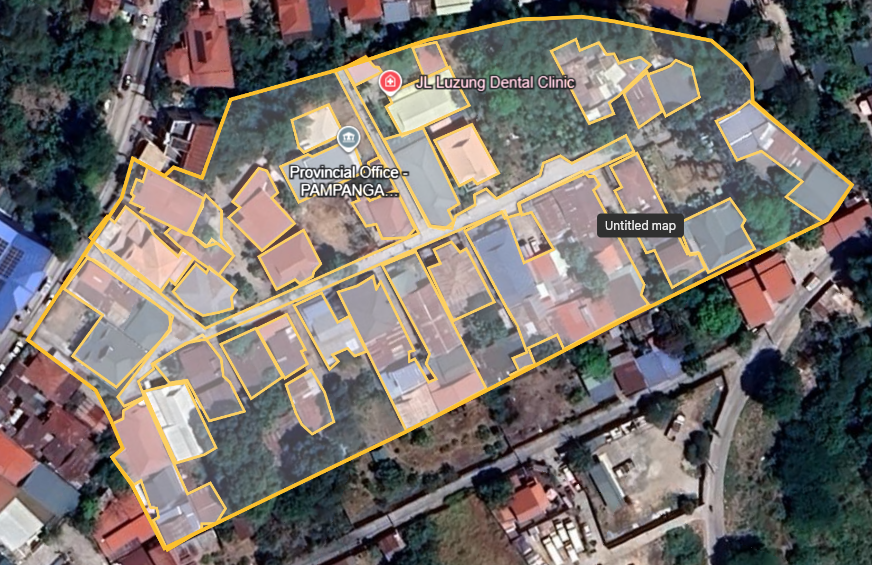

Rainfall Duration-Drainage Capacity Model for Urban Flooding
Home
Custom Simulation
Research Paper
FAQ
Magtoto Compound, Sindalan, City of San Fernando, Pampanga

Simulation Inputs
Total rainfall depth (mm)
Storm duration (hours)
Number of timesteps (integer)
Simulate
Simulation Results
Rainfall (mm)
Water Depth (mm)